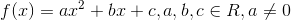
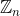

Ce trebuie să știi pentru a trece Bacul cu brio
Pentru o pregătire cât mai bună a examenului pentru Matematică-M1 este important să cunoști pentru Bacalaureat:
Din CLASA a IX-a
Mulţimi şi elemente de logică matematică
- Mulţimea numerelor reale: operaţii algebrice cu numere reale, ordonarea numerelor reale, modulul unui număr real, aproximări prin lipsă sau prin adaos , partea întreagă, partea fracţionară a unui număr real; operaţii cu intervale de numere reale.
- Propoziţie, predicat, cuantificatori.
- Operaţii logice elementare (negaţie, conjuncţie, disjuncţie, implicaţie, echivalenţă), corelate cu operaţiile şi cu relaţiile dintre mulţimi (complementară, intersecţie, reuniune, incluziune, egalitate, regulile lui De Morgan).
- Tipuri de raţionamente logice: inducţia matematică. Probleme de numărare.
Accesează aceste ghiduri și citește în detaliu totul despre mulțimi și elemente de logică matematică:
Funcţii
Funcţii definite pe mulţimea numerelor naturale (şir)
- Modalităţi de a defini un şir, şiruri mărginite, şiruri monotone; exemple simple.
- Tipuri de şiruri: progresii aritmetice, progresii geometrice, formula termenului general în funcţie de un termen dat şi raţie, suma primilor n termeni ai unei progresii.
- Condiţia ca
 numere să fie în progresie aritmetică sau geometrică pentru .
numere să fie în progresie aritmetică sau geometrică pentru .
Funcţii; lecturi grafice
- Reper cartezian, produs cartezian; reprezentarea prin puncte a unui produs cartezian de mulţimi numerice; condiţii algebrice pentru puncte aflate în cadrane. Drepte în plan de forma
 , sau ,
, sau ,  .
. - Funcţia: definiţie, exemple, exemple de corespondenţe care nu sunt funcţii, modalităţi de a descrie o funcţie, lecturi grafice. Egalitatea a două funcţii, imaginea şi preimaginea unei mulţimi printr-o funcţie, graficul unei funcţii, restricţii ale unei funcţii.
- Funcţii numerice, proprietăţi ale funcţiilor numerice introduse prin lecturi grafice: reprezentarea geometrică a graficului, intersecţia cu axele de coordonate, rezolvări grafice de ecuaţii şi inecuaţii de forma
 , mărginire, paritate, imparitate (simetria graficului faţă de axa
, mărginire, paritate, imparitate (simetria graficului faţă de axa  sau faţă de origine), simetria graficului faţă de drepte de forma , sau faţă de puncte oarecare din plan, periodicitate, monotonie.
sau faţă de origine), simetria graficului faţă de drepte de forma , sau faţă de puncte oarecare din plan, periodicitate, monotonie. - Compunerea funcţiilor; exemple cu funcţii numerice.
Funcţia de gradul I
- Definiţie, intersecţia graficului cu axele de coordonate, ecuaţia
 , reprezentarea grafică a functiei
, reprezentarea grafică a functiei  ,
,  .
. - Interpretarea grafică a proprietăţilor algebrice ale funcţiei: monotonia şi semnul funcţiei. Studiul monotoniei.
- Inecuaţii de forma
 studiate pe mulțimea numerelor reale sau pe intervale de numere reale.
studiate pe mulțimea numerelor reale sau pe intervale de numere reale. - Poziţia relativă a două drepte.
- Sisteme de inecuaţii de gradul I.
Funcţia de gradul al II-lea
- Reprezentarea grafică a funcţiei , intersecţia graficului cu axele de coordonate, ecuaţia , simetria faţă de drepte de forma , .
- Relaţiile lui Viète.
Interpretarea geometrică a proprietăţilor algebrice ale funcţiei de gradul al II-lea
- Monotonie. Studiul monotoniei prin semnul diferenţei , rata creşterii (descreşterii), punct de extrem (vârful parabolei).
- Poziţionarea parabolei faţă de axa
 semnul funcţiei, inecuaţii de gradul II studiate pe mulțimea numerelor reale sau pe intervale de numere reale, interpretare geometrică: imagini şi preimagini ale unor intervale (proiecţiile unor porţiuni de parabolă pe axe).
semnul funcţiei, inecuaţii de gradul II studiate pe mulțimea numerelor reale sau pe intervale de numere reale, interpretare geometrică: imagini şi preimagini ale unor intervale (proiecţiile unor porţiuni de parabolă pe axe). - Poziţia relativă a unei drepte faţă de o parabolă.
- Rezolvarea sistemelor de ecuații de gradul al II-lea, interpretarea geometrică.
Următoarele ghiduri conțin toate aceste noțiuni despre șiruri și funcții:
- Ghid | Progresii
- Ghid | Funcții
- Ghid | Funcții elementare (primul capitol)
- Ghid | Funcția de gradul I
- Ghid | Funcția de gradul al II-lea
Vectori în plan
- Segment orientat, relaţia de echipolenţă, vectori, vectori coliniari.
- Operaţii cu vectori: adunarea (regula triunghiului, regula paralelogramului), proprietăţi ale operaţiei de adunare, înmulţirea cu scalari, proprietăţi ale înmulţirii cu scalari, condiţia de coliniaritate, descompunerea după doi vectori daţi, necoliniari şi nenuli.
Accesează primul capitol al Ghidului | Geometrie, intitulat Vectori în plan, wcare conține aceste noțiuni detaliate și exemplificate.
Coliniaritate, concurenţă, paralelism - calcul vectorial în geometria plană
- Vectorul de poziţie al unui punct.
- Vectorul de poziţie al punctului care împarte un segment într-un raport dat, teorema lui Thales (condiții de paralelism).
- Vectorul de poziţie al centrului de greutate al unui triunghi (concurenţa medianelor unui triunghi).
- Teorema bisectoarei, vectorul de poziţie al centrului cercului înscris într-un triunghi; ortocentrul unui triunghi; relaţia lui Sylvester, concurenţa înălţimilor.
- Teorema lui Menelau, teorema lui Ceva.
Accesează Ghid | Geometrie, în special capitolul doi, intitulat Coliniaritate, concurenţă, paralelism - calcul vectorial în geometria plană, care conține aceste noțiuni detaliate și exemplificate.
Elemente de trigonometrie
- Cercul trigonometric, definirea funcțiilor trigonometrice .
- Formule de reducere la primul cadran, formule trigonometrice.
Elemente de trigonometrie este primul capitol al materialului Ghid | Trigonometrie și conține informațiile de mai sus detaliate.
Aplicaţii ale trigonometriei şi ale produsului scalar a doi vectori în geometria plană
- Produsul scalar a doi vectori: definiţie, proprietăţi. Aplicaţii: teorema cosinusului, condiţii de perpendicularitate, rezolvarea triunghiului dreptunghic.
- Aplicaţii vectoriale şi trigonometrice în geometrie: teorema sinusurilor, rezolvarea triunghiurilor oarecare.
- Calculul razei cercului înscris şi a cercului circumscris în triunghi, calculul lungimilor unor segmente importante din triunghi, calcul de arii.
Accesează Ghid | Trigonometrie, capitolul doi Aplicații ale trigonometriei.
Din CLASA a X-a
Mulţimi de numere
- Numere reale: proprietăţi ale puterilor cu exponent raţional, iraţional şi real ale unui număr pozitiv, aproximări raţionale pentru numere iraţionale sau reale.
- Radical dintr-un număr raţional, proprietăţi ale radicalilor.
- Noţiunea de logaritm, proprietăţi ale logaritmilor, calcule cu logaritmi, operaţia de logaritmare.
- Mulţimea
 . Numere complexe sub formă algebrică, conjugatul unui număr complex, operaţii cu numere complexe. Interpretarea geometrică a operaţiilor de adunare şi de scădere a numerelor complexe şi a înmulţirii acestora cu un număr real.
. Numere complexe sub formă algebrică, conjugatul unui număr complex, operaţii cu numere complexe. Interpretarea geometrică a operaţiilor de adunare şi de scădere a numerelor complexe şi a înmulţirii acestora cu un număr real. - Rezolvarea în a ecuaţiei de gradul al doilea cu coeficienţi reali. Ecuaţii bipătrate.
- Numere complexe sub formă trigonometrică (coordonate polare în plan), înmulţirea numerelor complexe şi interpretare geometrică, ridicarea la putere (formula lui Moivre).
- Rădăcinile de ordinul n ale unui număr complex. Ecuaţii binome.
Accesează următoarele ghiduri sau pagini din ghiduri care conține detaliate noțiunile de mai sus:
Funcţii şi ecuaţii
- Funcția putere.
- Funcția radical.
- Funcția exponențială și funcția logaritmică; creștere exponențială, creștere logaritmică.
- Funcții trigonometrice directe și inverse.
- Injectivitate, surjectivitate, bijectivitate; funcţii inversabile: definiţie, proprietăţi grafice, condiţia necesară şi suficientă ca o funcţie să fie inversabilă.
- Rezolvări de ecuaţii folosind proprietăţile funcţiilor.
Următoarele ghiduri te pot ajuta:
Metode de numărare
- Mulțimi finite ordonate. Numărul de funcții.
- Permutări.
- Aranjamente.
- Combinări.
- Binomul lui Newton.
Ghid | Metode de numărare conține tot ceea ce trebuie să știi despre aceste noțiuni matematice.
Matematici financiare
- Elemente de calcul financiar: procente, dobânzi, TVA.
- Culegerea, clasificarea şi prelucrarea datelor statistice: date statistice, reprezentarea grafică a datelor statistice.
- Interpretarea datelor statistice prin parametri de poziţie: medii.
- Evenimente aleatoare egal probabile, operaţii cu evenimente, probabilitatea unui eveniment compus din evenimente egal probabile.
Accesează Ghid | Matematici financiare dedicat acestui capitol de matematică.
Geometrie
- Reper cartezian în plan, coordonate carteziene în plan, distanţa dintre două puncte în plan.
- Coordonatele unui vector în plan, coordonatele sumei vectoriale, coordonatele produsului dintre un vector şi un număr real.
- Ecuaţii ale dreptei în plan determinate de un punct şi de o direcţie dată şi ale dreptei determinate de două puncte distincte.
- Condiţii de paralelism, condiţii de perpendicularitate a două drepte din plan, calcule de distanţe şi de arii.
Ghid | Geometrie este materialul unde vei găsi toate aceste noțiuni detaliate și exemplificate.
Din CLASA a XI-a
Elemente de algebră
Elemente de calcul matriceal şi sisteme de ecuaţii liniare Permutări
- Noţiunea de permutare, operaţii, proprietăţi.
- Inversiuni, semnul unei permutări.
Despre aceste noțiuni poți afla mai multe, accesând pagina Permutări a materialului Ghid | Metode de numărare.
Matrice
- Tabel de tip matricial. Matrice, mulţimi de matrice.
- Operaţii cu matrice: adunarea, înmulţirea, înmulţirea unei matrice cu scalar, proprietăţi.
Ghid | Matrice conține în detaliu toate aceste noțiuni de care ai nevoie pentru a te pregăti pentru examenul de Bac din acest an.
Determinanţi
- Determinant de ordin , proprietăţi.
- Aplicaţii: ecuaţia unei drepte determinate de două puncte distincte, aria unui triunghi şi coliniaritatea a trei puncte în plan.
Accesează pagina Determinantul unei matrice pătratice a Ghidului | Matrice și află totul despre determinanți.
Sisteme de ecuaţii liniare
- Matrice inversabile din
 .
. - Ecuaţii matriceale.
- Sisteme liniare cu cel mult 4 necunoscute, sisteme de tip Cramer, rangul unei matrice.
- Studiul compatibilităţii şi rezolvarea sistemelor: proprietatea Kroneker-Capelli, proprietatea Rouche, metoda Gauss.
Materialul Ghid | Sisteme de ecuații liniare conține tot ceea ce ai nevoie pentru examen.
Elemente de analiză matematică
Limite de funcții
- Noţiuni elementare despre mulţimi de puncte pe dreapta reală: intervale, mărginire, vecinătăţi, dreapta încheiată, simbolurile
 şi .
şi . - Funcţii reale de variabilă reală: funcţia polinomială, funcţia raţională, funcţia putere, funcţia radical, funcţia logaritm, funcţia exponenţială, funcţii trigonometrice directe şi inverse.
- Limita unui şir utilizând vecinătăţi, proprietăţi.
- Şiruri convergente: intuitiv, comportarea valorilor unei funcţii cu grafic continuu când argumentul se apropie de o valoare dată, şiruri convergente: exemple semnificative: operaţii cu şiruri convergente, convergenţa şirurilor utilizând proprietatea Weierstrass. Numărul .
- Limite de funcţii: interpretarea grafică a limitei unei funcţii într-un punct utilizând vecinătăţi, calculul limitelor laterale.
- Calculul limitelor pentru funcţiile studiate; cazuri exceptate la calculul limitelor de funcţii:
 , , ,
, , ,  ,
,  ,
,  ,
,  .
. - Asimptotele graficului funcţiilor studiate: asimptote verticale, oblice.
Despre toate acestea poți citi accesând Ghid | Limite de funcții.
Continuitate
- Interpretarea grafică a continuităţii unei funcţii, studiul continuităţii în puncte de pe dreapta reală pentru funcţiile studiate, operaţii cu funcţii continue.
- Semnul unei funcţii continue pe un interval de numere reale.
- Proprietatea lui Darboux, studiul existenţei soluţiilor unor ecuaţii în mulțimea numerelor reale.
În Ghid | Funcții continue poți afla totul despre continuitate.
Derivabilitate
- Tangenta la o curbă, derivata unei funcţii într-un punct, funcţii derivabile, operaţii cu funcţii care admit derivată, calculul derivatelor de ordin I şi al II-lea pentru funcţiile studiate.
- Funcţii derivabile pe un interval: puncte de extrem ale unei funcţii, teorema lui Fermat, teorema Rolle, teorema Lagrange şi interpretarea lor geometrică, consecinţe ale teoremei lui Lagrange: derivata unei funcţii într-un punct.
- Regulile lui l’Hospital.
- Rolul derivatei I în studiul funcţiilor: puncte de extrem, monotonia funcţiilor.
- Rolul derivatei a II-a în studiul funcţiilor: concavitate, convexitate, puncte de inflexiune.
Despre derivabilitate poți afla mai multe, accesând Ghid | Funcții derivabile.
Reprezentarea grafică a funcţiilor
- Rezolvarea grafică a ecuaţiilor, utilizarea reprezentării grafice a funcţiilor în determinarea numărului de soluţii ale unei ecuaţii.
- Reprezentarea grafică a funcţiilor.
- Reprezentarea grafică a conicelor (cerc, elipsă, hiperbolă, parabolă).
Află să reprezinți funcțiile și conicele accesând Ghid | Reprezentarea grafică a funcțiilor și a conicelor.
Din CLASA a XII-a
Elemente de algebră
Grupuri
- Lege de compoziţie internă (operaţie algebrică), tabla operaţiei, parte stabilă.
- Grup, exemple: grupuri numerice, grupuri de matrice, grupuri de permutări, , grupul aditiv al claselor de resturi modulo n.
- Morfism, izomorfism de grupuri.
- Subgrup.
- Grup finit, tabla operației, ordinul unui element.
Inele și corpuri
- Inel, exemple: inele numerice, inele de matrice, inele de funcții reale.
- Corp, exemple: corpuri numerice, corpuri de matrice.
- Morfisme de inele și corpuri.
Inele de polinoame cu coeficienţi intr-un corp comutativ
- Forma algebrică a unui polinom, funcţia polinomială, operaţii (adunarea, înmulţirea, înmulţirea cu un scalar).
- Teorema împărțirii cu rest; împărțirea polinoamelor, împărțirea cu
 , schema lui Horner.
, schema lui Horner. - Divizibilitatea polinoamelor, teorema lui Bézout; c.m.m.d.c. şi c.m.m.m.c. al unor polinoame, descompunerea unor polinoame în factori ireductibili.
- Rădăciniale polinoamelor, relaţiile lui Viète.
- Rezolvarea ecuațiilor algebrice, ecuații binome, ecuații bipătrate.
Află totul despre grupuri, inele și corpuri, polinoame, dar și despre inele de polinoame, accesând:
Elemente de analiză matematică
Primitive (antiderivate)
- Primitivele unei funcţii.
- Integrala nedefinită a unei funcţii, proprietăţi ale integralei nedefinite: liniaritate.
- Primitive uzuale.
Integrala definită
- Diviziuni ale unui interval
![[a,b]](../../../../media/webbooks/175/1064/images/equations/ld0zg8mlroccsqrp7a3kfg==.gif) , norma unei diviziuni, sistem de puncte intermediare. Sume Riemann, interpretare geometrică. Definiţia integrabilităţii unei funcţii pe un interval
, norma unei diviziuni, sistem de puncte intermediare. Sume Riemann, interpretare geometrică. Definiţia integrabilităţii unei funcţii pe un interval - Teorema de medie, interpretare geometrică, teorema de existenţă a primitivelor unei funcţii continue.
- Proprietăși ale integralei definite: liniaritate, monotonie, aditivitate în raport cu internalul de integrare.
- Formula Leibniz - Newton.
- Metode de calcul al integralelor definite: integrarea prin părţi, integrarea prin schimbare de variabilă. Calculul integralelor prin metoda descompunerii în fracţii simple.
(Aplicaţii ale integralei definite)
- Aria unei suprafeţe plane.
- Volumului unui corp de rotaţie.
- Calculul unor limite de şiruri folosind integrala definită. - exclusă din programă.
În cadrul Ghidului | Calcul integral vei afla totul despre primiteve, integrala definită și aplicațiile acesteia.